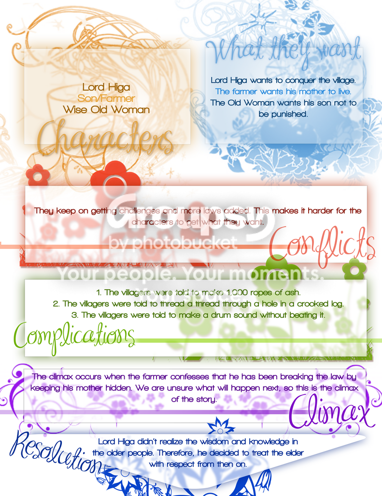
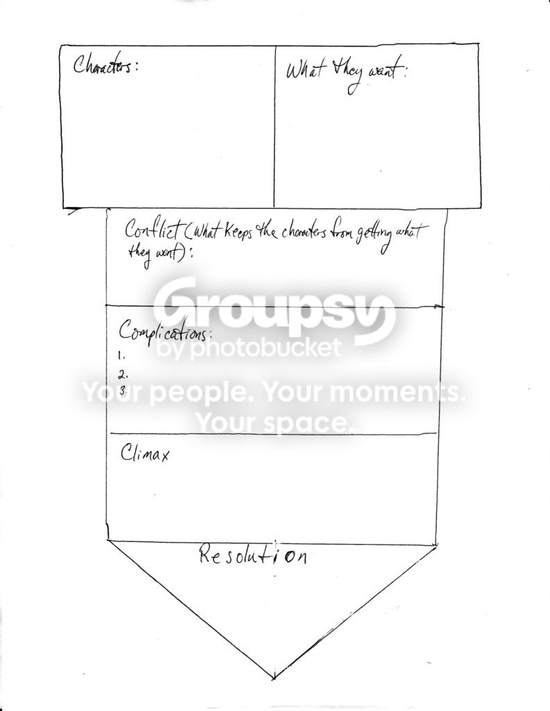
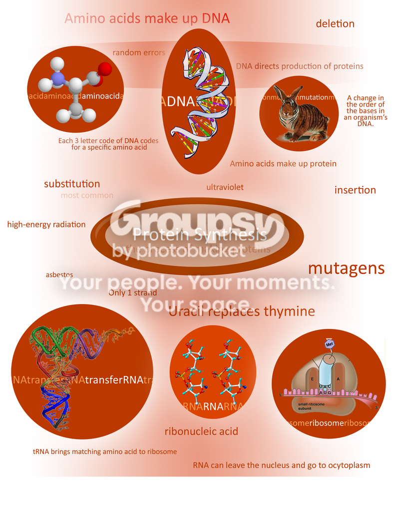

#15187 1 2007-05-11T21:03:21Z usaswim The ones with astericks next to them are available to take.
---------------------------------------------------------------------
---------------------------------Personalized images
---------------------------------------------------------------------
 ---------------------------------
-----------------------------------------------------
---------------------------------Free for all!
-----------------------------------------------------
 Not all of my works are in this one post. They are spanned throughout the topic
Not all of my works are in this one post. They are spanned throughout the topic
Opinions/things I need to work on will be greatly appreciated.
I'll take requests on anything : sigs, userbars, etc, etc. They'll be ready in a jiffy 
#320358 2 2007-05-11T21:24:16Z 29403 These are great. Well done man. Love the cars.

#320600 3 2007-05-12T22:04:28Z usaswim Here's 2 I made for Mother's Day. Opinions are appreciated.
Spoiler: Pics
^I forgot to change the font, so it's pretty pixeled.
#320637 4 2007-05-12T23:30:11Z Weisslenny0 Awesome! I like the red car the best.
I think that's a lens flare in the background... an I right?
#320641 5 2007-05-12T23:57:07Z usaswim Yes. And it's called a Ferrari

@your sig

The drop down bars at the top are there for a reason if you don't know how to code

#320880 6 2007-05-13T20:15:11Z usaswim Here's another one:
I don't really like it much

*
#320887 7 2007-05-13T20:36:16Z nevermore That first mother's day one is cool. It creates a very "Magic Eye" effect with the ultra-focused flower in the front. I like that.
And the flower font - did you make that, or was it a downloadable font?
#320894 8 2007-05-13T21:17:32Z usaswim Wow it would take all day if that font was hand-made. No, it's called Flores.
#320977 9 2007-05-14T01:05:32Z usaswim Here are some works I did about a year ago. None of them are traced. (Wouldn't that kinda be difficult to get out the details?) Meh, I'm no good at shading.
#321038 10 2007-05-14T03:46:32Z catspride Cool. These aren't that bad dude. You should draw more. Well, still make images, but, I love drawings of any sort better, it's more natural.
#321576 11 2007-05-16T01:38:05Z usaswim Here's some more pics:
I made this for my friend's friend.
Here's the sig for
BWD's contest
The background on the first one found here:
http://www.deviantart.com/deviation/55122994/#322625 12 2007-05-20T01:26:17Z usaswim Meh.
Suggestions, tips, advice?
#322626 13 2007-05-20T01:31:35Z Frogs Really nice. I love how you added the "Top Rated Map" and "Bitesized Maps" links into the signature.
#322628 14 2007-05-20T01:38:44Z usaswim Thanks. Did I pick a good font this time? It's called Mia's Scribblings.
#322632 15 2007-05-20T02:03:45Z LittleViking Perfect font.
#323063 16 2007-05-21T12:47:40Z Weisslenny0 Yeah, I agree. It looks sort of like those wonderfully well animated fonts where the lines move around a bit. (if you've got no idea what I'm talking about tell me and I'll try and make an example).
It really suits the picture, at any rate.
On a different note... how'd you make the general text area hyperlink to the NUMA pages? Can that be done within Photoshop, or...?
(I need help for everything
)
#323069 17 2007-05-21T13:14:59Z apg On a different note... how'd you make the general text area hyperlink to the NUMA pages?
Unlike it seems, the picture actually consists of four images.

|||

---

|||

Only the portions with text are hyperlinked.
[IMG]http://i193.photobucket.com/albums/z2/usaswim/Mario%20signature/upper_left.png[/IMG][URL=http://numa.notdot.net/map/86501][IMG]http://i193.photobucket.com/albums/z2/usaswim/Mario%20signature/upper_right.png[/IMG][/URL]
[URL=http://numa.notdot.net/browse?sort=rating&order=desc&author=usaswim&bitesized=true][IMG]http://i193.photobucket.com/albums/z2/usaswim/Mario%20signature/bottom_left.png[/IMG][/URL][IMG]http://i193.photobucket.com/albums/z2/usaswim/Mario%20signature/bottom_right.png[/IMG]
#323128 18 2007-05-21T20:27:39Z usaswim Yup, that's how I did it. If only I could like make it perfect by chopping it off exactly where the text area meets the background, but it might not work.
#323144 19 2007-05-21T21:44:17Z Weisslenny0 I'd say you could make it 3 pictures if you joined the two longer ones, but I'm not sure how well that would work when you put it on the forums.
So for the link all you need in terms of code is
[URL=stuff][IMG]Picture[/IMG][/URL]
right?
#323154 20 2007-05-21T22:20:12Z usaswim If I joined the two longer ones it would not work, because every image is enclose around a rectangle. The two smaller rectangles would actually be one rectangle.
And yes
Attachment (lost): post-20-1179786012.png
#323631 21 2007-05-23T21:01:50Z usaswim Here's a border I made for my powerpoint presentation about advertisements. It's not awesome because I was on a tight schedule, but tell me what you think!
Here are all the slides to the Powerpoint
#323929 22 2007-05-24T22:21:10Z usaswim I honestly have no idea what the hell this is. I made it in like 15 minutes when I was bored. Free to take. Credit. Post here if you want it edited. Opinions?
Taken by BWD[/b]

Oh BTW, my first vector brushed.
#324011 23 2007-05-25T01:54:30Z rocket_thumped It looks brushed to me..
#324014 24 2007-05-25T02:00:22Z usaswim Yeah, I used brushes.
#324028 25 2007-05-25T02:35:01Z rocket_thumped Then no, it isn't vector.. It's brushed.
#324073 26 2007-05-25T07:08:03Z Weisslenny0 I like it. The colours are good. And I like the powerpoint background too, partly because I can tell what they all are
#324076 27 2007-05-25T07:17:58Z Britannia Yep, it is brushed, not vector.
Anyhows, I'd like it, please.
#324092 28 2007-05-25T10:20:45Z fingersonthefrets I honestly have no idea what the hell this is. I made it in like 15 minutes when I was bored. Free to take. Credit. Post here if you want it edited. Opinions?
Oh BTW, my first vector brushed.

#324127 29 2007-05-25T13:37:06Z usaswim Sure, BWD. Do you want the .psd file of it?
Uhhh.... I can't upload the .zip file of it for some reason. Help?
#324154 30 2007-05-25T16:31:52Z usaswim Here's another brush thing. Free to take/edit. Credit.
Taken by Nindae
#324165 31 2007-05-25T18:08:23Z Britannia The latest one is going a bit overboard with brushes, me thinks. The left half is still nice, though.
And on the help subject, well, if you want I won't give you the stress and just save the image you have here

#324168 32 2007-05-25T18:18:48Z usaswim I don't really understand that last sentence.
#324182 33 2007-05-25T19:05:00Z Samrat16 Here's another brush thing. Free to take/edit. Credit.
I like it. You could have made it more interesting easily though. After editing:

That advertisement border is pretty cool, and you are getting better with brushes. Keep it up!
#324219 34 2007-05-25T21:12:40Z usaswim Ummm... I don't quite like the gradient background. Meh, I liked it as it is.
And thanks
EDIT: I had a really good idea for a new signature. I'm looking for a Now Showing sign that shows the doors and booths of the cinema/movie theater but I can't find one
#324256 35 2007-05-25T23:35:22Z Weisslenny0 Wow, it looks really good. Did you draw all the arrows or are they part of a brush pack?
And I like the colours. They complement each other.
#324259 36 2007-05-25T23:46:13Z usaswim I used the brush pack.
#324357 37 2007-05-26T11:20:16Z Weisslenny0 How's this? I know there aren't booths there, but oh well...
Maybe you could hold a week-long contest or something like that and see who can make the best signature with those requirements.
Attachment (lost): post-20-1180178416.psd
#324373 38 2007-05-26T13:47:08Z usaswim I actually wanted something like this :
buit thanks, anyway. Maybe that's a good idea, but how many people would enter

Oh and how did you upload the .psd file?
#324470 39 2007-05-26T22:10:29Z Weisslenny0 Well lots of people entered BWD's contest, so I'd expect a few people to enter this.
And I just put the psd file as the attachment. I can send it to you if it didn't work or something like that.
#324619 40 2007-05-27T14:26:30Z usaswim Here's something I made for Weisslenny0. Also brushed.
--
#324781 41 2007-05-27T23:40:24Z catspride Cool... That's pretty good. I like the arrangement of the layers...
#324911 42 2007-05-28T08:27:09Z Weisslenny0 And here's (I won't bother to put a link, because you can all see it...) something I made for you! It's a little thing I put in my signature. I'll remove it if you don't like it.
Oh, and which font did you use in my picture?
#324981 43 2007-05-28T15:50:32Z usaswim Cool, thanks! Oh, and I didn't realize that the forumer doesn't automatically add a border around avvys, so I'll add one on it. The font is
Visitor TT2 BRK. Size 13 (usually). I think that it looks great! Just make the font white and add a 1 px stroke around it. (Select the text layer > On the bottom, press the fx symbol > Stroke > Black, 1px) It'd look pretty nice if you'd center the objects/images under your sig, as it is the biggest. Just do this
[color=white]------------------------------[/color][img]your img here[/img]
.
Oh, and here's something I made for Memorial Day (It took about 10 minutes, so... yeah)
#325059 44 2007-05-28T20:34:29Z usaswim Here's something I made for bertoli
11 layers! Second most to 27 layers

Took just over an hour. Played with different blending modes.
I'm not sure about the embossed Blooz sign... Comments? Questions? Concerns?
EDIT: I just realized that it looks low-res. Sorry

#325152 45 2007-05-29T00:05:16Z Navick You're turning into an awesome imager. Weisslenny's is amazing, along with your Memorial Day one and your Zwok sig.
#325176 46 2007-05-29T01:32:35Z usaswim Thanks! I try
.
#325269 47 2007-05-29T08:39:45Z Weisslenny0 How's this for centering?
#325718 48 2007-05-30T16:56:53Z usaswim Here's a little something I made for RedCorpse :

I just added a gradient layer, doubled it, used a brush to go over the bright areas (overlay), and added the embossed Grienz sign.
EDIT: Here's something else - Turned out worse than I thought

(10 layers)
*
#325825 49 2007-05-30T21:46:32Z Weisslenny0 The first one's nice. Looks a bit familiar though...
Hmm.. I don't really like the second one much. Looks a bit too much like a last attempt to break out of something...
Good work though
#325841 50 2007-05-30T22:16:17Z usaswim Yeah, I was going for a "ghostly" effect, but I kinda failed...
#326256 51 2007-06-01T16:00:07Z usaswim You really don't have to tell me how ugly this is:
I'll be making new sigs for every holiday in the year, better ones for major holidays and crappier ones for minor holidays
. Actually, I'll just spend less time on the minor holiday ones. If one day there is no holiday, I'll just put up my Mario sig. All holiday references found
here
EDIT: Ok... every single day is a holiday. I'll only make sigs on the holidays that sound like they exist

As you can tell, I have lots of time on my hands
EDIT2: Ok, fine. Just about all of them are fake holidays. Well, I'll make sigs on international holidays and I won't mess up your brains with fake ones
#326564 52 2007-06-02T14:27:40Z usaswim Here's something I made
.
These are actually all failed attempts at a new signature
#326575 53 2007-06-02T14:58:29Z Chase I love that last one, very nice!
#326842 54 2007-06-03T02:32:00Z usaswim Heh. I made a siggy I like. Took an hour just to divide it. Dammit, why does the font always turn out bad?
The amazing background found
here. I only wish I was that good.
EDIT: Heh. I had an idea. I could've put all that stuff inside the iPhone, so it'd be more cool. I'll do it next time.
#326848 55 2007-06-03T02:45:28Z Frogs Very nice. I requested a signature with that exact same image a while back, but Kashkin never got around to it. What a shame, it's such a cool picture, considering it took me only a few minutes to locate using Google. Anyways, nice job.
Edit: The links in your signature are awesome and original. Just thought I'd let you know.
#326892 56 2007-06-03T07:29:22Z Spawn of Yanni That sig is beyond sexy. You know, you should make divided images your 'theme', if you will, for your future sigs (other than your holiday ones) - although I'm sure that's already what you intend to do.
#326905 57 2007-06-03T09:45:30Z faemir ^ liking that
#327460 58 2007-06-04T22:12:02Z usaswim A little something I made for martyr by request. Thoughts, concerns?
Spoiler: 4 color variants

#327518 59 2007-06-05T00:25:35Z BeSilence Can i have the arrow one?
#327543 60 2007-06-05T01:55:49Z usaswim Yeah, sure.
#327947 61 2007-06-06T05:51:58Z Weisslenny0 The variants are nice. I think I like the top one best.
Oh, and the font really suits it. Drippy
#328036 62 2007-06-06T16:14:55Z usaswim Here's one I made for D-Day. Maybe I should make sigs prior to the day I use them. Meh. I kind put too many images overlapping, I dunno. Too clustered?
#328040 63 2007-06-06T16:20:00Z Spawn of Yanni It looks a little bit clustered, yeah. You could have also tried to find more of a space for "In God We Trust" to emphasise it a bit, but it's still well done.
#328132 64 2007-06-06T20:24:56Z usaswim Here's a groovy background. It was the background for the Slipknot thing I made for Demonized. After I removed the Slipknot stuff, I ended with one groovy-looking background that I like. All brushed. In case you're wondering, the splotchy stuff in the background (the spongy-looking stuff) is actually a sunshine ray brush and I used a reticulation filter.
I played with some stuff and ended with a groovy border:
#328637 65 2007-06-08T02:55:02Z Sniperwhere Clustered or not, That D-Day one sent shivers down my spine. I like it.
#328791 66 2007-06-08T17:25:00Z usaswim I'm going to try to make some images with Fireworks now. I've been using Photoshop too long
#328906 67 2007-06-08T23:13:22Z Weisslenny0 What's the difference between the two? They're both Adobe products...
#328930 68 2007-06-09T00:14:07Z usaswim #329001 69 2007-06-09T02:53:08Z Sniperwhere #329009 70 2007-06-09T03:21:47Z Navick #329013 71 2007-06-09T03:29:03Z usaswim Ummm... the whole reason I have the "My Images", "Top-Rated Map", and "Bitesized Maps" seperate is because I want each of them to be clickable...
Maybe I should just make the entire row an image. But it would be so unprofessional ;_;
Cool! I started a trend! Now everybody's doing it!
#329029 72 2007-06-09T04:03:16Z Weisslenny0 Hmmm, I don't really know. Fireworks was a Macromedia product when we got it.
I thought Macromedia was owned by Adobe... Either way, it's Adobe now.. I think...
EDIT: I was going to change my sig and add this to it:


But it says I have too many images.
I think with Flash you can make any number buttons that link to different websites, but still have the whole thing as only one image. However, I have no idea how to link to make buttons like to websites using flash. If you know anyone who can teach me I think I can fix the problem.
#329033 73 2007-06-09T04:07:10Z usaswim I think flash is disabled on sigs and avatars.
Some more randomness:

#329034 74 2007-06-09T04:08:42Z Weisslenny0 I think flash is disabled on sigs and avatars.
Fast response...
I think Flash is too, but if you export the file as a .gif or something it shouldn't be a problem.
#329035 75 2007-06-09T04:09:45Z usaswim Even more randomness:
I think Flash is too, but if you export the file as a .gif or something it shouldn't be a problem.
Ummm... can you tell me how?
Whatever. I'll fix my sig tomorrow.
#329039 76 2007-06-09T04:14:40Z Weisslenny0 I just have to double-check...
OK, here we go:
Go to File>Export>Export Image> Then choose what image type.
Example:
But it's not moving!!!
#329053 77 2007-06-09T04:30:01Z usaswim But can I still divide the image and individually link the words?
#329089 78 2007-06-09T05:40:36Z Weisslenny0 Yeah, you can. You can create unlimited buttons in Flash. Or at least, many many buttons.
I've managed to put it all together in Flash (a bit dodgy up the top)
Unfortunately though, I can't get the stupid hyperlinks to work. If anyone here knows how to do them in Flash 9/CS3 then please tell me
Actually, I might try doing it in CS2... I know how to use that a bit better.
EDIT: OK, thanks to Clifty I found out how to do text hyperlinks. Not too sure about the buttons yes, but I can get text well. I'll try typing over your sib and see if I can get it right...
EDIT AGAIN: Here we go...
I wasn't sure what fonts you used, and I'm not sure how to do borders around text. But apart from that..
... What do you think? It's all one picture, so there won't be problems with having too many pictures in your sig.
3rd EDIT:
The links didn't work. Here's the .swf just to see if that will work...
http://i183.photobucket.com/albums/x270/we.../Usaswimsig.swf
EDIT: All the links work, but I don't know why it has zoomed in.
#329157 79 2007-06-09T13:11:32Z usaswim Cool, thanks! But flash is disabled on sigs, so I can't put it on...
#329374 80 2007-06-09T23:16:58Z Weisslenny0 Damn... I don't know what do to then... The .gifs didn't do the links, and neither did the .png that I put there. Hmm.... well, I'm not sure. Maybe if you made the three links in the top-right into only 3 pictures (as in, without the rest of the row as a 2nd picture), or you could possible put them spread out like you did in my signature, so that they'd be only 3. Apart from that, I'm not sure. We could see if we could get .swf to be put in signatures, but there'd have to be a size limit in terms of pixels.
Hmm...grr.
#329993 81 2007-06-11T13:11:12Z usaswim For all you Aussies out there!
#330039 82 2007-06-11T16:05:27Z Chase usaswim: Flash is not disabled on sigs, 200x200 is max dimensions though...
[flash=YxZ]FILEURL[/flash]
I think...
#330378 83 2007-06-12T11:01:51Z Weisslenny0 usaswim: Flash is not disabled on sigs, 200x200 is max dimensions though...
[flash=YxZ]FILEURL[/flash]
I think...
Oh, so it's not disabled? Thanks
Though 200X200 is a pretty bad sig size...
#331240 84 2007-06-14T19:28:49Z usaswim Aargh, I forgot to do International Sea Turtle day, today. Oh well, I'll do another holiday later.
#331309 85 2007-06-14T22:31:32Z CDotLeach swim, can you do me a sig please, like the one I asked for in the other forum. Would be much appreciated.
#331311 86 2007-06-14T22:35:35Z Sniperwhere Anyway I could get a judge bar that compliments my new sig?
#331315 87 2007-06-14T22:53:19Z usaswim Ok... so what do you want on it?
*Primary colors
@sniperwhere. I think your sig is cropped. Am I right? Well, anyway, can I have the entire picture?
Oooh, I'm gonna start on my own sig.
My sig is done! Watcha think?
#331317 88 2007-06-14T23:03:50Z CDotLeach Just any shades of blue, with my name on it please. I don't really mind what else you do with it, it's all up to you.
#331322 89 2007-06-14T23:16:04Z Sniperwhere No it's not cropped.
Here's the image.

and also, on the left side can you add text saying "Click for sig."? I want to have as little text outside of the spoiler as possible.
#331331 90 2007-06-14T23:25:38Z usaswim Ummm... ok... well, open your image editing software and enlarge the canvas. Then give me the image. That way, I can add a sigbar underneath it seamlessly.
Ok... here's CDotLeach's sig. I attempted to copy CTB's simplicity, but because you wanted a grunge/abstract style, it was pretty impossible and it turned out horrible. Meh.
#331352 91 2007-06-14T23:50:45Z Sniperwhere I extended the canvas and got this. It was made in GIMP so the amount of things I can do is limited.

#331354 92 2007-06-14T23:54:54Z usaswim Yeah, that doesn't really help me much. I'll just take part of you sig and crop it. Could you post an image of your sig without the text?
Can you just send me your sig with all of the layers? Like a .gimp file or something?
#331356 93 2007-06-15T00:03:39Z Sniperwhere Okay. here is the bottom part that will actually got in smooth and seemlessly.

#331379 94 2007-06-15T01:10:12Z usaswim With glow:
Regular:
I did the eclipse from the bottom, dunno if it looks good that way. I can change it.
#331391 95 2007-06-15T01:33:18Z Sniperwhere Thanks. (although, the ellipse lightened up the image and there is now a faint seem.)
#331450 96 2007-06-15T07:44:09Z Weisslenny0 I wouldn't wory about the seam if I was you. I didn't notice that it was there until I read it.
Though if you did want to fix it all you'd need to do is lighten the image a tiny bit.
#331535 97 2007-06-15T17:31:39Z Sniperwhere I wouldn't wory about the seam if I was you. I didn't notice that it was there until I read it.
Though if you did want to fix it all you'd need to do is lighten the image a tiny bit.
I'm not worried about it.
#332035 98 2007-06-17T04:18:55Z usaswim I really got bored.
Made from an awesome brushset somewhere on DeviantArt.
Free to take
#332079 99 2007-06-17T07:15:25Z Weisslenny0 It's really nice!
Any idea which set?
EDIT: Never mind. I found them
I don't think I did... I found something else and made this:
But it's not with those brushes. Damn... Oh well. If you could say what they are, though...
#332203 100 2007-06-17T16:45:05Z usaswim #332211 101 2007-06-17T17:41:09Z Jimmy_Mcnabb thanks to usaswim for the killer blue swirly thingy

#332434 102 2007-06-18T02:58:03Z usaswim Something I made.
Might be my new sig with some more edits. Opinions?
I think I'm beginning to have a new style, sort of CTB-ish.
#332483 103 2007-06-18T07:00:29Z Weisslenny0 I like it. How come you changed image size up by 10 horizontally and vertically, though?
And maybe make everything outside the border the same colour as the forum background, because you can faintly see the white.
#332518 104 2007-06-18T09:53:11Z CDotLeach swim, can I have a matching avy for the sig you made me please?
#332524 105 2007-06-18T10:41:28Z Weisslenny0 Here's something I made:
It's fine if you don't like it; I was bored anyway
And you're welcome for the photoshop stuff.
#332526 106 2007-06-18T11:06:10Z CDotLeach Very nice, but I'm looking for one with the same brushes and stuff.
Thanks though, I may use this.
#332531 107 2007-06-18T11:34:45Z Weisslenny0 Thanks
It's the same brush for the light streamy things, but not for the other bits. I wasn't sure which brushes they were, and couldn't find them amongst my brushes, so...
#332534 108 2007-06-18T11:49:49Z CDotLeach I'll use it now if you can make a couple of minor adjustments like a 1 pixel border and instead of CDotLeach just put CDL. If you could do that it would be great.
#332543 109 2007-06-18T12:12:42Z Weisslenny0 How's this?
I'm sure if Usaswim makes one it'll be tons better, but this is good for something temporary. Oh, and I hope you don't mind that I moved the font so it wasn't centered. I thought it was better that way.
#332549 110 2007-06-18T12:50:10Z CDotLeach Great! This'll do just fine until I get a new one. Thanks.
#332552 111 2007-06-18T13:17:34Z usaswim Very nice avatar, weisslenny! Although you need to download some of those grunge/abstract brushes.
Here's my version.
Looks a bit light, maybe I need to add a color overlay?
Do you still want the diagonal lines in the top left corner?
EDIT: Ehhh, the blue in the avatar still doesn't match. Let me redo...

#332575 112 2007-06-18T14:48:15Z CDotLeach Yep, that's just what I was looking for.
I'll keep weissl's for a bit though.
Thanks.
#332601 113 2007-06-18T15:54:00Z catspride Amazing improvements lately usaswim, I really love this new style!!
#332631 114 2007-06-18T17:54:11Z Samrat16 Something I made.
Might be my new sig with some more edits. Opinions?
I think I'm beginning to have a new style, sort of CTB-ish.
That's crazy awesome. 9.5/10 It does look CTB-ish but it's still cool.
#332701 115 2007-06-18T21:26:45Z usaswim OMG! I forgot the border to my sig! OH NOES!!!
*quickly edits*
#332933 116 2007-06-19T06:32:37Z Weisslenny0 Very nice avatar, weisslenny! Although you need to download some of those grunge/abstract brushes.
Here's my version.
.....
Hehe, you avatar is way better
And I do have grunge and abstract brushes; I just don't use them most of the time
And you one needs a border, methinks.
EDIT: Oh, and 2 things...
1: Nice new sig, by the way. What happened to all the other links?
2: What's with the slightly changed name of this topic thingy?
#332934 117 2007-06-19T06:36:25Z Harley I think I'm beginning to have a new style, sort of CTB-ish.
Be sure to develop your own style though. Thats important, otherwise you wont find the inner-you-creativity (to it's full extent)
#332937 118 2007-06-19T06:56:41Z Weisslenny0 I was going to post this in the other post, but what the heck...
This is sort of a request, I guess. I was just wondering if you could change my signature pic slightly (I probably won't be using the new version for this forum, but it would be nice). I was wondering if you could change the "weisslenny0" to 'Leonard Weiss', and also change the whole bottom bar text to "My Music" where the 'images' is.
Also, could ou make a slightly altered version of the avater that says "Leonard Weiss", or "LW"?
If you've got the time, that would be great.
#332998 119 2007-06-19T13:01:58Z usaswim Yeah, I'll do that this afternoon.
My avatar with border looks really ugly, trust me.
@Harley - My signatures aren't as simple as his though
Just the borders are somewhat similar, sorta.
#333458 120 2007-06-20T11:52:49Z Weisslenny0 Nice new sig. I like the font.
What was wrong with the old one though?
And thanks for doing the sig thing sometime.
#334250 121 2007-06-22T01:08:01Z usaswim Oh, right, I totally forgot. I'll do it sometime.
#334390 122 2007-06-22T08:07:33Z Weisslenny0 Thanks
That would help.
You don't need to do the avatar if you don't want to, though. I don't mind using the "Weisslenny0" avatar on my forum.
#334460 123 2007-06-22T14:49:14Z Samrat16 Usaswim, where do you get your all your animated avatars from?
#334518 124 2007-06-22T17:46:41Z usaswim I just browsed through tinypic.com
#335044 125 2007-06-24T01:39:33Z Weisslenny0 I thought that was an uploading site..?
#335051 126 2007-06-24T02:25:09Z usaswim Yes, and you can view what people upload.
#335084 127 2007-06-24T03:25:42Z beginner2 Hey usaswim. Can you please make me an avvy and a sig. I need new ones, and through weisslenny0's sig, i saw that you made that work of art. Could you please make me a sig and avvy? thank you.
#335095 128 2007-06-24T03:40:09Z usaswim Wow that was extremely vague. More details please?
Alright, I'll work on everybody's requests right now. No more procrastinating
#335100 129 2007-06-24T03:49:03Z Weisslenny0 Yes, and you can view what people upload.
Oh. I'm smart
Alright, I'll work on everybody's requests right now. No more procrastinating
Thanks. Happy modified sig time
(In case you forgot what I wanted (which is OK) if you could just change the "weisslenny0" to "Leonard Weiss" with or without capitals. And only have "music" in the bottom bit. Thanks
)
#335119 130 2007-06-24T04:17:23Z usaswim Erm, I tried something different. Tell me if you like it and I'll divide the image into parts. Sorry, can't make the text any clearer.
#335122 131 2007-06-24T04:24:15Z Weisslenny0 Wow... umm.. It's nice
I don't mind using my current avatar, but if I could have that one with a border...
And I like that more, actually, but... 1: Is all the text on the same angle? Maybe it just doesn't look it to me. 2: Could you perhaps change the ariel font back to the current one? Ariel just looks funny, in my opinion (plus, you can't pixellate a pixel).
EDIT: And could you maybe get rid of "maps"? 'Cause it's for the school forum it would look a bit funny...
#335134 132 2007-06-24T04:45:56Z usaswim Here's beginner2's
If you like it I'll make the avvy.
#335149 133 2007-06-24T04:58:25Z Weisslenny0 I know I'm not beginner2, but it looks really good
I like the 3Dness of the phone.
#335162 134 2007-06-24T05:27:05Z beginner2 Great! Avvy would be nice!
#335553 135 2007-06-25T07:53:40Z Weisslenny0 Hmm... actually, can I change what I said about my signature, slightly?
Could I have "images" "music" and "forum home" (if it fits)? Otherwise change the 'forum home' to "CGSchool", which should fit.
Thanks again
#336313 136 2007-06-27T16:35:55Z usaswim Beginner2's avatar

#336380 137 2007-06-27T20:57:21Z beginner2 Thanks!
#336583 138 2007-06-28T12:07:22Z Weisslenny0 It's awesome, just wondering if it would look better with the light grey background that
s the same as the one in the sig. To me it just looks slightly funny being white.
#337621 139 2007-07-01T21:46:19Z usaswim
It was my attempt at dejablue's request, until I realized that it didn't fit the criteria. I couldn't find a picture of a lake with an area of land next to it
#337630 140 2007-07-01T22:03:25Z Animator I would request an order.
1 desktop about N.
I'm serious.
Or make me a avvy of an golden N.
Either one is fine.
#338332 141 2007-07-03T12:20:08Z Weisslenny0 I would request an order.
1 desktop about N.
I'm serious.
A whole desktop?!
And is that like one N, or lots of little ones...
And I'm sure Usaswim was going to ask, what colours do you want?
#338342 142 2007-07-03T13:08:44Z usaswim I guess gray would be the dominant color.
I'll probably do it today sometime. Maybe 1024x768?
#338490 143 2007-07-03T20:27:55Z Animator And is that like one N, or lots of little ones...
I meant the game.
I guess gray would be the dominant color.
Not really, just get creative with the N theme.
NO COMPLETELY GREY COLORED DESKTOP!
Quote
Maybe 1024x768?
Yes.
#338554 144 2007-07-04T00:06:28Z Weisslenny0 And is that like one N, or lots of little ones...
I meant the game.
Oh... oops
So drones and stuff.. tiles, etc too, I guess. Sounds fun; I look forward to seeing it
#338571 145 2007-07-04T00:40:56Z Tk_ArtS one question whats a user bar?
#338582 146 2007-07-04T01:05:55Z Animator This is a user bar.

#338587 147 2007-07-04T01:19:58Z catspride This is a user bar.

That userbar is amazing! [/sarcasm]
#338623 148 2007-07-04T02:24:33Z Thomas Great images

May I have a sig and an avatar?
Criteria:
Movies
Movies
Video games Movies
Hmmm....
Movies
Be creative.
#338688 149 2007-07-04T05:36:53Z Gforce20 Usually I'm good at making signatures, but my last one didn't do so well apparently. I'd like an abstract one of any style, so long as the main color is blue > deep blue.
#338705 150 2007-07-04T07:27:08Z Weisslenny0 Wow, so many requests... methinks Usaswim's not going to have a hard time, but have to put in tons of time to these. Well, maybe not tons... but a few hours, maybe.
And TB007, which movies.., and which colours?
(On behalf of Usaswim - I'm sure you would've asked anyway
)
And I look forward to seeing these. They sound like they'll be awesome
#338747 151 2007-07-04T14:03:56Z Thomas And TB007, which movies.., and which colours?
Maybe James Bond, the old Psycho (Black and White version), maybe other Alfred Hitchcock movies (If you don't know who the heck he is, just search on the internet). As for colours, Besides the black and white, I like deep colours, so a deep blue will do fine. Maybe a deep red.
#338750 152 2007-07-04T14:09:35Z usaswim
That's a lot of requests

Meh, I'll try to do most of them today because I have the time. TB007's one should be really fun! I'll go with Ratatoiulle or Spiderman 3
So James Bond, eh?
And the wallpaper should take a while, so don't expect it until maybe the weekend or so, and I have that website I'm making...
And here's an Independence Day sig. Free for everybody to take! Thanks to Ultima for fixing the waterprint.

TB007:
#338758 153 2007-07-04T15:52:03Z Samrat16 Website? Will you please link us to it, when it's done?
#338761 154 2007-07-04T15:57:55Z Thomas Thanks, That's such an awesome sig!
#338952 155 2007-07-05T01:56:34Z Weisslenny0 Thanks, That's such an awesome sig!
I agree! good gob Usaswim
And I also agree with Samrat 16... which website, and we want to see it
#340222 156 2007-07-08T03:16:54Z Animator Oh, and I also want a sigbar about sublime that says
"sublime winner"
The color are green.
theme:N
Oh, and how is that wallpaper coming along?
#340557 157 2007-07-08T22:13:16Z usaswim Here's the sigbar.
Erm... about the wallpaper... kinda half-finished
#340634 158 2007-07-09T01:35:51Z Gforce20 Never mind my request. I've found somebody else who can do it, someone less busy than you.
#340678 159 2007-07-09T02:48:00Z usaswim You made a request?
#340939 160 2007-07-09T17:03:27Z Gforce20 Usually I'm good at making signatures, but my last one didn't do so well apparently. I'd like an abstract one of any style, so long as the main color is blue > deep blue.

#340945 161 2007-07-09T17:05:09Z usaswim Oh, sorry. I can go make that.
#340960 162 2007-07-09T17:18:33Z Gforce20 Oh, sorry. I can go make that.
Please, don't bother. I found one that's cooler than what I requested.
#341867 163 2007-07-11T21:48:20Z usaswim Here's a little thing I made. Took 4 hours and over 20 layers.
Some more stuff

#341868 164 2007-07-11T21:50:16Z Animator Very nice, give a haunted impression.
And how's the wallpaper coming along?
#341870 165 2007-07-11T21:53:58Z usaswim Well, I can't think of anything that will make it more interesting than different shades of gray. But it's going to look pretty nice! I'm using this style to make it -
#342371 166 2007-07-13T02:58:52Z usaswim Woot! New siggy! Amazing brushes by
ca-pris#342373 167 2007-07-13T03:01:27Z kydo Nice.
But how do you make seperate links inside your sig?
#342377 168 2007-07-13T03:08:52Z usaswim I divide the image into a table, and link each seperate part
#342556 169 2007-07-13T10:47:28Z dejablue Here's a little thing I made. Took 4 hours and over 20 layers.
Thanks man, it looks great. I can tell you put a lot of work into it. Thanks.
#342745 170 2007-07-13T19:10:53Z Spawn of Yanni Nuuuuu! Your new sig! Why no transparent background?
#342758 171 2007-07-13T20:00:00Z usaswim I'll fix it later today

#343112 172 2007-07-14T22:39:02Z Samrat16 O_o
Really nice stuff.
#344289 173 2007-07-18T01:26:03Z usaswim
#345149 174 2007-07-19T20:25:31Z usaswim #345192 175 2007-07-19T22:00:31Z Weisslenny0 Wow, that is so good. It looks really haunted and creepy, and the black and white works really well (as opposed to having coloured lightning). Anyway, awesome
#346120 176 2007-07-22T08:44:10Z Question¿Mark I divide the image into a table, and link each seperate part
You can alternatively use a technique called Image Mapping in which you are taken to a different location depending on which point of the image you click.
There's a fantastic guide to it on GaiaOnline, Lemme see if I can find it.
http://www.gaiaonline.com/forum/viewtopic.php?t=7705740
There ya go, Its riddled with Gaia related stuff, but should work here too.
Also, GIMP has a utility that'll do image mapping.
#346143 177 2007-07-22T11:02:45Z apg You can alternatively use a technique called Image Mapping in which you are taken to a different location depending on which point of the image you click.
I'm afraid it's a too complicated feature to be used in this forum.
#346297 178 2007-07-22T21:50:28Z usaswim #346680 179 2007-07-23T21:45:40Z Question¿Mark You can alternatively use a technique called Image Mapping in which you are taken to a different location depending on which point of the image you click.
I'm afraid it's a too complicated feature to be used in this forum.
Thats too bad, Image Mapping is so useful.
Oh and UsaSwim, I love this one:
It looks fantastic.
#347158 180 2007-07-25T04:42:49Z usaswim #347162 181 2007-07-25T04:46:52Z Sniperwhere Damn! the halo one is kick a$$.
#347168 182 2007-07-25T05:05:52Z Skyline These are hot. Now get to work on the website >:(
#347252 183 2007-07-25T14:21:31Z usaswim You know, we /could/ get on to Round 5 /if/ you judges could judge faster.. The main reason of that site is to make judging easier, and for me to do less maintainence. Round 5 starts in 2 days!
#347285 184 2007-07-25T16:36:25Z Skyline But... how are we supposed to judge the Round 4 maps?
#347311 185 2007-07-25T18:06:00Z usaswim I put them on there, right?
#347325 186 2007-07-25T18:38:56Z Samrat16 Augh! What's so hard about making it transparent! Make it transparent, not white!
Please don't hurt me...
#347328 187 2007-07-25T18:43:29Z usaswim It is transparent...
Well, my sig isn't.
#347688 188 2007-07-26T18:20:46Z Samrat16 Does
this look transparent to you? The avatar is transparent but not the sig. Choose one or the other.
#347699 189 2007-07-26T19:21:21Z usaswim Yup, it is.
See.
Attachment (lost): post-20-1185477681.png
#347769 190 2007-07-26T22:27:23Z Samrat16 Of course! On a black background...

#347772 191 2007-07-26T22:32:42Z usaswim It /is/ transparent. What the hell are you trying to say?
#347775 192 2007-07-26T22:49:45Z Samrat16 Whatever. Forget everything I said.
#348322 193 2007-07-28T16:29:06Z catspride No offense to you, Samrat. But, if it's transparent on a black background, I would assume that it's transparent on other backgrounds too.
Edit:
Wow... teach meh!!
#348349 194 2007-07-28T18:42:14Z usaswim
Well, first of all, I used a bunch of grunge/abstract brushes to make the lime background. Then I added the heart, and added a 1 px white stroke to it. Because the heart was so detailed, the stroke wasn't accurate, but I thought that it looked good. Then I added some magic fairy dust brushes. To top it off, I added a sunray brush set at a low opacity. I forgot how I did the border...
btw, all of the brushes were made by ca-pris. Except for the sun-ray brush.
Here's something I made. Would have been for the SOTW, but it's too big,

I DEDIKATE THIS IMAJ TO KWIFTEE
Meh, I'll just sacrifice the outer glow.
#348390 195 2007-07-28T20:52:37Z epigone Do you have a deviantart account usaswim?
If not, you should definately get one, people on there would love your work.
#348646 196 2007-07-29T16:57:38Z usaswim I do, but I don't really use it a lot.
Here's something simple. It's 1024 x 768. Heh, only 145kb.
#348651 197 2007-07-29T17:18:28Z epigone That's a sexy wallpaper.
Actually, all of your work is sexy.
@faved.
#348768 198 2007-07-30T00:32:45Z catspride I agree... very nice wallpaper. I got those brushes too, but, I can't do anything that good with 'em.
#349094 199 2007-07-30T20:16:59Z usaswim Aaargh, Photoshop decided to reset itself to default and I lost all my brushes and everything. Now I'll have to go download all of them again. Damn. Third time.
#349137 200 2007-07-30T21:58:21Z catspride Aaargh, Photoshop decided to reset itself to default and I lost all my brushes and everything. Now I'll have to go download all of them again. Damn. Third time.
Ouch. How'd that manage to happen?
It sucks though, I know. I reformatted and forgot to keep my brushes....
#349138 201 2007-07-30T22:03:24Z catspride Double-post. Sorry about that, the net froze.
#349147 202 2007-07-30T22:44:30Z usaswim Aaargh, Photoshop decided to reset itself to default and I lost all my brushes and everything. Now I'll have to go download all of them again. Damn. Third time.
Ouch. How'd that manage to happen?
It sucks though, I know. I reformatted and forgot to keep my brushes....
When I force shutdown my computer.
But this time, I saved a .abr with all of the brushes on it. It's 150MB!
#349400 203 2007-07-31T18:15:02Z Samrat16 How do you compile multiple brushsets into one .abr file? I never figured that out.
#349424 204 2007-07-31T19:15:58Z usaswim It's easy in Photoshop
Attachment (lost): post-20-1185909358.png
#349634 205 2007-08-01T03:34:05Z catspride
Very well done.
#349637 206 2007-08-01T03:46:06Z usaswim Heh, thanks. I totally dig your sig.
#350447 207 2007-08-03T01:23:18Z fingersonthefrets that ones alright
would be alot better if you got rid of the white behind the text so it was transparent
#350450 208 2007-08-03T01:42:34Z usaswim Meh, I liked it better like that.
#350559 209 2007-08-03T05:21:06Z Animator W-a-l-l-p-a-p-e-r-?
#350572 210 2007-08-03T05:28:55Z Sniperwhere I am always impressed by your images. You know what? can I have a green one? I just love your images.
#350579 211 2007-08-03T05:36:33Z BeSilence Primary colours:Dark, silver and black
Theme: Maplestory
Renders/images: This
Text:BeSilent... Or else.
Complexity:COMPLEX
Matching avatar (yes or no):yes
Dimensions (size):500x150
Preferred artist (optional):Usaswim
#351022 212 2007-08-04T01:29:15Z fingersonthefrets Meh, I liked it better like that.
the way CTB has used it, its best like that, he has a spoiler tag under it so it would look weird having two seperate parts connecting to a small bar
#351081 213 2007-08-04T03:28:25Z Sniperwhere Can I get a green sig? I don't know If you saw my post for that.
#351086 214 2007-08-04T03:34:48Z usaswim Erm, that's all you want? A green colored sig?
Oh, I've been busy and I didn't feel like making sigs lately. I might get over that.
#351093 215 2007-08-04T03:48:23Z Animator *COUGH*Wallpaper?*COUGH*COUGH*
#351097 216 2007-08-04T04:04:01Z BeSilence Primary colours:Dark, silver and black
Theme: Maplestory
Renders/images: This
Text:BeSilent
Complexity:COMPLEX
Matching avatar (yes or no):yes
Dimensions (size):150x500
Preferred artist (optional):Usaswim
Pwetty pwease.
#351106 217 2007-08-04T04:18:35Z LittleViking Give it more than 24 hours, I'm sure he hasn't forgotten...
#351399 218 2007-08-04T22:13:06Z Sniperwhere Erm, that's all you want? A green colored sig?
Not a plain green sig, one in the same style you make of course. You know what? can you add blue to it also?
Primary colors: Green and blue.
Theme: none
Text: Take a shot... with a sniper.
Complexity: complex
Avatar: No.
Dimensions: 500x150
Hope that helps.
#351654 219 2007-08-05T17:40:57Z usaswim I'll do everybody's requests today. Except Animator's.
#351657 220 2007-08-05T17:46:42Z Animator Aww...
#351707 221 2007-08-05T20:24:27Z usaswim Here's the sig sockmonkey has been begging me to do forever. I love it
==sniperwhere==
It looked a lot better black, but you requested those colors... meh.
==BeSlience==
I already made a Maplestory sig for you a while ago, you want a different one? And where's the render you want me to use?
==ChaosWolf==
#351710 222 2007-08-05T20:33:51Z beginner2 good sig. I'd use it if it was for me. You do have talent
#351741 223 2007-08-05T21:19:20Z BeSilence Primary colours:Dark, silver and black
Theme: Maplestory
Renders/images:
This
Text:BeSilent... Or else.
Complexity:COMPLEX
Matching avatar (yes or no):yes
Dimensions (size):500x150
Preferred artist (optional):Usaswim
#351762 224 2007-08-05T22:15:51Z Sniperwhere Thanks man. I love the sig.
#351771 225 2007-08-05T22:32:25Z southpaw could you point me toward the brushes you used for the background in snipers sig? I'm always looking for good abstract brushes.
#351773 226 2007-08-05T22:46:39Z usaswim Sorry, I just browse through popular all time and 1 month.
#351802 227 2007-08-06T00:56:34Z Tk_ArtS 
it'll take me forever to be like this.
If ya'll(yes I live in texas) could like collab sigs w/me that would be great!
BTW do you use gimp Usaswim?
#351805 228 2007-08-06T01:02:27Z usaswim I use Photoshop.
Here's a wallpaper I made. Click the preview. 1280x1024. Do you think it would look better if I reflected the flowers instead of continuing them? I can edit it.
#351806 229 2007-08-06T01:06:33Z BeSilence For the "render" i want look at my last post in this thread. Thanks when you make me sig. (I'm a pirate now)
#351813 230 2007-08-06T01:35:31Z catspride I use Photoshop.
Here's a wallpaper I made. Click the preview. 1280x1024. Do you think it would look better if I reflected the flowers instead of continuing them? I can edit it.
Flowers look great as is, IMO. But, I don't like the Ellipse.
#351851 231 2007-08-06T03:57:15Z southpaw
it'll take me forever to be like this.
If ya'll(yes I live in texas) could like collab sigs w/me that would be great!
BTW do you use gimp Usaswim?
you are aware that GIMP can open and edit .PSD files, with the layers intact I believe, aren't you? Well if you weren't then you are aware now. I tried GIMP and accidentally told it to open every type of image file, so my photoshop files kept opening in GIMP which pissed me off. anyway, we could collab on sigs with you, you'll just have to save your files in .psd and upload them to a site the allows large filesizes.
Actually I think LV gave one in the New Forum Image Worm thread... I believe it is on the second page.
#351854 232 2007-08-06T04:11:03Z Animator And my wallpaper?
Is it finished?
#352342 233 2007-08-07T15:04:19Z usaswim Alright, I just finished customizing my Objectdock, so now all of my icons have the same theme.
Here they are if anybody wants them.
#352364 234 2007-08-07T15:33:35Z Chase Meh, I liked it better like that.
the way CTB has used it, its best like that, he has a spoiler tag under it so it would look weird having two seperate parts connecting to a small bar
The way I have used what? My little "MOAR SIGNATUR" tag?
Anyway, everything looks hella good. You should post a preview image so we know what's there first.
#352431 235 2007-08-07T17:51:50Z usaswim Here's a preview.
MAI NOO SIG
Attachment (lost): post-20-1186509110.png
#352557 236 2007-08-08T02:21:12Z BeSilence Why wont you make my signature?
#352558 237 2007-08-08T02:21:42Z usaswim Okay
#352562 238 2007-08-08T02:31:31Z BeSilence Thank you.
#352573 239 2007-08-08T03:04:04Z T3chno Primary colours:Dark, silver and black
Theme: Maplestory
Renders/images: This
Text:BeSilent... Or else.
Complexity:COMPLEX
Matching avatar (yes or no):yes
Dimensions (size):500x150
Preferred artist (optional):Usaswim
I was bored and decided to do something for a change. I'm no usaswim, but here it is:
#352608 240 2007-08-08T04:59:08Z BeSilence It needs a border, but its still very nice.
#352769 241 2007-08-08T19:06:19Z T3chno Here's the border:

EDIT: Accidentily uploaded borderless one.

#353078 242 2007-08-09T16:04:26Z abSoLuTe Wow... these blow what i usauly make away...
Is this guy still making sigs for people?
#353125 243 2007-08-09T17:57:28Z usaswim Hey, that's me!
I'm busy. But sure.
#353136 244 2007-08-09T18:14:51Z abSoLuTe Oh, i would like to have a awsome abstract sig sorta like yours. But its ok.
Your awsome btw.
Edit: Click the link in my sig, i want to have your insight.
#353309 245 2007-08-10T01:50:31Z usaswim Here's a list of untaken sigs. I don't really mind what you do with them. As long as you credit. I can also provide the .psd for them.

- ?
#353316 246 2007-08-10T02:01:32Z smort The first and third ones are cool.
I would claim one if not for my non-existent theme.
#354998 247 2007-08-13T22:53:16Z BeSilence I shall revive thee! Anyways i need a banner saying Lyanthus Colors are Red Yello and orange.
#355037 248 2007-08-14T00:55:00Z usaswim Any specific dimensions?
#355040 249 2007-08-14T01:01:53Z BeSilence Well its a banner so make it a regular banner size.
#355091 250 2007-08-14T05:37:42Z fractalchaoz OMGF!
THAT THIRD ONE IS AWESOME CAN I HAVE IT?!?!?!
May I also have the .psd, I wanna do something to it - don't worry, I'll credit you... and maybe give you something on IRC. Maybe.
#355407 251 2007-08-14T20:49:58Z usaswim #355467 252 2007-08-14T23:27:21Z BeSilence All of your signatures are pure AWESOME.
#355775 253 2007-08-15T20:00:54Z usaswim One of my homework assignments yesterday was to decorate the cover of a portfolio with stuff about me. This is what I did. I edited the canvas to make it wallpaper sized.

#355860 254 2007-08-16T02:21:14Z usaswim Another one. Free to take. Oh god, that sunray turned out horrible because I set it to pinlight and transparent.
Attachment (lost): post-20-1187230874.png
#355897 255 2007-08-16T04:14:02Z T3chno Another one. Free to take. Oh god, that sunray turned out horrible because I set it to pinlight and transparent.
It's really not that bad. But yea, I see what you mean with the transparency with the ray.
#356002 256 2007-08-16T12:22:07Z spoon Oh, so your name's John?
These sigs, banners, wallpapers etc. are pure awesomeness. No really.
#356153 257 2007-08-16T21:06:44Z usaswim Well, I'll be making images a lot less now that I'm being rained down with homework.
#356184 258 2007-08-16T23:48:52Z usaswim Here's my homework. I was supposed to do a graphic organizer and got carried away.
Attachment (lost): post-20-1187308132.png
#356200 259 2007-08-17T00:21:46Z Animator That thing deserves an A+ if you turn it in.
Wall-paper... NAO!
#356356 260 2007-08-17T12:07:00Z spoon That's beautiful! I like how the categories branch out into leaves. Do you use .gimp?
#356360 261 2007-08-17T12:37:08Z BanjoDave Woah. I love your images. All of them.
#356478 262 2007-08-17T19:34:05Z usaswim Nah, I use Photoshop. And the sad thing is my science teacher just went meh, and that's it. She even said it wasn't related to the topic.
#356488 263 2007-08-17T19:47:44Z T3chno Nah, I use Photoshop. And the sad thing is my science teacher just went meh, and that's it. She even said it wasn't related to the topic.
Tough crowd.
Is your science teacher old school free-handing?
#356496 264 2007-08-17T19:57:25Z Animator Then that person is a dumda** to say that is poor.
Or maybe they're jealous because of your advanced imaging talent.
Wall + paper =
Wallpaper x 0 =
#356691 265 2007-08-18T11:57:29Z spoon Or maybe they're jealous because of your advanced imaging talent.
Thats probably true.
Can you teach me how to use photoshop? Please? I suck at it.
#356726 266 2007-08-18T14:47:08Z usaswim Nobody really taught me anthing about Photoshop (except xdude). The thing is, anybody can use Photoshop. All you need is imagination and creativity. You can make anything. You can ask me about specific features on Photoshop, except the Pen tool, which I still can't figure out how to use despite all of the "beginner level" tutorials
. You can go to
this site and find some incredible video tutorials on CS3.
#357569 267 2007-08-20T19:42:44Z spoon Thanks, but no thanks. T3chno taught me how to use gimp, so I use that now.
Thanks for your help though.
#358891 268 2007-08-24T02:59:02Z usaswim #360196 269 2007-08-28T03:04:10Z usaswim Haha, I have so much science homework...
D:
#360317 270 2007-08-28T11:51:18Z spoon That's awesome! You've got some major skillz, yo!
But seriously, you do have talent. Boatloads of it. It's not fair really. The best thing I can come up with is this:
Attachment (lost): post-20-1188301878.png
#360401 271 2007-08-28T20:31:00Z Samrat16 #360516 272 2007-08-29T03:01:57Z usaswim More!
Language Arts this time
2 hours and 36 layers. Totally unnecessary, as the teacher has already provided a worksheet, but I like to "stand out". Shit, I could've been working on a project during that time

===VERSUS===

#360518 273 2007-08-29T03:14:16Z incluye #360521 274 2007-08-29T03:21:58Z usaswim What?
#360532 275 2007-08-29T03:39:12Z southpaw haha, the colors!!! glad to see you are making good color choices. the font though.... haha jk.
#360535 276 2007-08-29T03:50:23Z incluye 'Xactly.
#361483 277 2007-09-02T03:47:46Z incluye Make me a blue and green sig that I can put in my spoiler.
#361491 278 2007-09-02T04:41:44Z BeSilence Tell us what grade you get.
#361498 279 2007-09-02T05:03:37Z Gforce20 .......Usaswim, you must get EXTREMELY bored when you do this. Where on earth do you find the time?!
#361585 280 2007-09-02T15:24:17Z Ignate I was freaked out when I saw the worksheet you were SUPPOSED to use. That's certainly a huge difference.
#361608 281 2007-09-02T16:39:21Z Chase *Me demands some fonts*
NOW
#361696 282 2007-09-02T23:44:49Z TearsOfTheSaints You are quite good usaswim. Where did you get those fonts?
#361938 283 2007-09-03T20:30:58Z usaswim All of my fonts are downloaded from dafont.com.
The one I used was included with Vista, called Ma Sexy.
#362035 284 2007-09-04T01:53:11Z TearsOfTheSaints Thank you, usaswim.
#363855 285 2007-09-10T03:40:35Z usaswim More science crap 1.5 hours

#363859 286 2007-09-10T03:49:57Z epigone You have to much free time. Go outside and play.
#363862 287 2007-09-10T04:00:53Z TearsOfTheSaints I think your images are incredible!
#364002 288 2007-09-10T21:48:54Z Samrat16 You have to much free time. Go outside and play.
True, and
I think your images are incredible!
True.
You really should tell us the grades you get for these things. And where you find the time. I guess freshman year can be a "slack year."
#364032 289 2007-09-10T23:31:39Z Gforce20 Usaswim, you totally took my idea with your signature having that wavy reflection!
Well, actually, I was planning on doing that today, and you already did it... dang... now it wouldn't be original.
#364056 290 2007-09-11T00:37:03Z usaswim Nah, I've done it on another signature as well. Btw, does my current sig look better or worse without the reflection?
#364087 291 2007-09-11T03:21:05Z usaswim Postcards. Pshh...
I've totally dedicated all of my graphic design knowledge and my printing ink to science.
#364091 292 2007-09-11T03:33:56Z T3chno Amazing. Just perfect. You should join a graphic design class. Then you could really show off your work. 500000999999/5
I really liked the Language Arts one.. What grade are you in by the way?
#364123 293 2007-09-11T06:45:14Z fingersonthefrets reflection is bad i think, but i think you should get a completely new sig, that one is old now
#364248 294 2007-09-11T21:01:30Z Samrat16 I liked the reflection. And yeah, go join a graphic design class. If you are in the same general school system I'm in, you have to take 2-D art and 3-D art before you can take the class. That's if your school has it because I'm not sure if ours does.
#364259 295 2007-09-11T21:17:44Z usaswim Well, I'm in 8th grade. Yeah, I haven't changed my sig in like... forever. I'll make a new one when I regain my brush magic. I've never joined a graphic design class, maybe I should find one?
#364331 296 2007-09-12T01:04:34Z TearsOfTheSaints Well, I'm in 8th grade.
#364402 297 2007-09-12T04:49:28Z Gforce20 Well, I'm in 8th grade.
QFE... dang, I'm a freshman and you're infinitely better...
#364406 298 2007-09-12T05:13:36Z southpaw you guys are all so young man. I'm technically a senior (because I'm going to college for my high school diploma I'm truly a sophomore in college, but would be senior had I stayed in traditional high school). I must say you make beautiful images usaswim, and maybe I'll steal your idea to do something on photoshop for school because I spend a lot of time on the computer, so it would make sense to make homework fun right? well, hope to see more of your work.
#364507 299 2007-09-12T22:37:41Z T3chno Well, I'm in 8th grade.
Holy crud.
Well, when you're in your sophomore year of high school and the classes I'm taking, I never have time for any fun on the computer these days.
Consider yourself lucky, getting into imaging at such an early age.
#364547 300 2007-09-13T01:06:52Z M_Sabata I'm a freshman in high school and I barely have enough time to go look at the new posts; much less play N.
#365765 301 2007-09-18T03:10:50Z usaswim Here's a preview of my website. Here's the intro. I made the entire thing with Photoshop shapes, and nothing else. Pretty simple, actually. Then I imported it into Flash and animated it. It's pretty sexalicious, especially for my first animation. Insert "John____" with my name, hidden for security purposes (like anybody cares).
http://i193.photobucket.com/albums/z2/usaswim/flash1swf.swf#365768 302 2007-09-18T03:21:08Z LittleViking Why didn't you just upload the .swf animation? It would be perfect quality and have a much smaller filesize.
#365963 303 2007-09-18T23:00:40Z usaswim I wasn't sure if .swf was allowed in this forum, because I thought Keron Cyst removed it.
I feel so dumb right now
http://i193.photobucket.com/albums/z2/usaswim/flash1swf.swf#365981 304 2007-09-19T00:17:04Z Animator That's sexy. Sexy doesn't describe this.
It's perfect.
#366142 305 2007-09-19T20:12:46Z Samrat16 Very nice.
#366256 306 2007-09-20T03:58:31Z usaswim Submission to MICC. And yes, inspired by Navick.
#366257 307 2007-09-20T04:06:54Z BeSilence usaswim gained: 100 artexp
#366258 308 2007-09-20T04:15:35Z Hendor Amino acids make up DNA
Sorry to tell you now... but that's completely wrong. DNA is made up of nucleotide monomers. Each nucleotide is comprised of 1 sugar, 1 phosphate base and 1 nitrogenous base. I think what was confusing you was the nitrogenous base part. This will be one of Adenosine, Cytosine, Guanine, Thymine or Urasil. While they sound like it, these are not amino acids.
As for all of your recent work, it's all quite beautiful. I'm sure your teachers have been quite... surprised.
#367993 309 2007-09-28T03:40:40Z usaswim OMG AN UPDATE. Yeah, Language Arts homework. It's an advertisement using propaganda techniques.
http://usaswim.deviantart.com/art/The-Carn...Coming-65959993#367995 310 2007-09-28T03:45:13Z Sniperwhere Amino acids make up DNA
Sorry to tell you now... but that's completely wrong. DNA is made up of nucleotide monomers. Each nucleotide is comprised of 1 sugar, 1 phosphate base and 1 nitrogenous base. I think what was confusing you was the nitrogenous base part. This will be one of Adenosine, Cytosine, Guanine, Thymine or Urasil. While they sound like it, these are not amino acids.
maybe you can help me with my chemistry homework.
#368058 311 2007-09-28T12:06:00Z Weisslenny0 Wow. I haven't checked up here in a while, and you've even more awesome than before. You should really post some of these on
my forum (oh, and also, you've got a request on there).
Anyway, keep up the awesome work Usaswim!
EDIT: And for the sig, couldn't you just chop off th reflection at the top and it'd fit?
#369874 312 2007-10-05T20:49:52Z usaswim #369878 313 2007-10-05T20:55:18Z spoon Looks good. Awesome
Also read the sig. It's too bad.
#428097 314 2008-04-13T17:24:06Z usaswim I'm back making sigs and taking requests. It's been a long time since I made anything, mainly because of schoolwork and loss of creativity.
Well, I'll occasionally update with new images I've made and requests on anything.
#428223 315 2008-04-13T23:59:39Z Be_Happy_:) OH. I want one. I've seen much your work and it's very impressive.
#428302 316 2008-04-14T06:14:33Z Weisslenny0 AWESOME!
Yay, can't wait to see more of your work!
#428367 317 2008-04-14T13:25:38Z Commander Gimme a sig.
plz
Also, the webby flash thing, just look like everything else you make... maybe just try something new...ish
#428507 318 2008-04-15T00:04:31Z Be_Happy_:) I asked for one first
#428573 319 2008-04-15T02:33:18Z usaswim Uhhh... so anything?
#428651 320 2008-04-15T10:35:12Z Be_Happy_:) Oh. I want mine not to have anything to do with smilies. I want it to be something about jazz! So I guess musical notes, saxophone, drum set, ect... Any of those would be fine
#428665 321 2008-04-15T11:53:10Z Commander Something cool.
#428666 322 2008-04-15T11:55:04Z Be_Happy_:) Thats not helpful